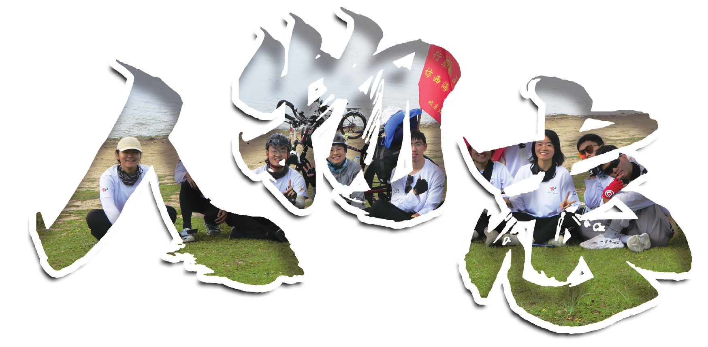
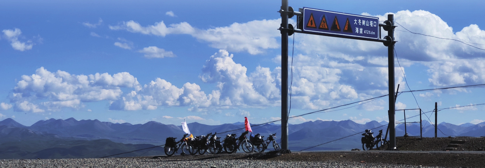

人物志
原刊37

大姐吴芷婧|青天草
“有时很感喟于自己能如此幸运和这样一群合拍的人成为团众。我出发前想了很久怎样才能做好一个大姐，上路才发现有许多时刻我其实很脆弱，更多时候我是在被弟弟妹妹们照顾着关心着。”
- 温柔，美丽，魅力四射的大姐！大姐虽然知道的很多，但完全没有姐姐架子，和我们打成一片哈哈哈。是爱美的小女孩，喜欢五彩的风车、可爱的粉红色鞋子和红格子袜子。很擅长观察并给出建议，亲亲大姐！
- 大姐！作为团内的大姐大、与七哥并存的电动小马达，润物细无声地关照每一个团众，真不愧是理想中的大姐人设！
- 大姐的人和她的声音一样，特别的温柔且稳重，考虑问题也很周全。大姐每到一个新地方就能很快找到特色美食小吃，然后我们这群狼崽子就闻风而动。
- 记得大姐的猫猫头，黑暗中几声减速后的揪心，记得大冬树山旁的红粽子，晴空下阴雨中飘扬的红白。喜欢大姐，喜欢叫一声大姐，长团会上没听到的话是永远的遗憾。
- 大姐在我心中就像顶梁柱一样，有一种处变不惊的大将风度，和大姐在一起就会有很强的安全感。暑期总能看到大姐甜甜的笑容，特别治愈。而且大姐总能找到各种美食，对每个地方好玩的都无所不知，跟着大姐打前站就可以轻松摸鱼，因为大姐总能把一切安排得妥妥当当。我爱大姐！
二二周海婷|一墨
“是缺席整个暑期的冤种，是送站最远的人，是后暑期时代居无定所的流浪者。”
- 在我看来二二是坚强乐观的人，即使生活中遇到或大或小的变故（诸如没赶上车、坐错车、手术病痛……）也从不抱怨，而是一边发疯一边迅速找到解决办法。
- 二二，大冤种呜呜呜。虽然说自己木讷，但不自知地拥有开朗，温暖，细心，共情的品质。能够在路过的各地结识友人是你的特长！祝你能够继续观察人类。
- 初遇在山上，然后有幸成为了团众！二二云游四海，见多识广，好羡慕她这种读万卷书行万里路的生活状态，是我理想中的生活了！希望自己也能成为像二二这样心态洒脱、灵魂自由、永远对生活和未来充满热爱的人！
- 有幸和二二一起并肩了冬游、双日、暑期三次旅程！很喜欢二二的可爱洒脱，无拘无束，以及非常喜欢像打扮一个姑娘一样打扮自己的车车，各种配件可谓是琳琅满目。以后的路还很长，祝二二能一直保持初心永远在路上！但是要注意安全！
- 和二二最初的那次见面是在五四操场，我举着手找到了师门的归属。可惜二二未能和我们一起骑过那个盛夏，当时听到二二不能骑车的消息时难过了好久。后来发现，哪怕未曾一路同行，二二通过自己的平安结与我们相连，你永远在我们心中。
三姐贾舒童|翠翠 r
“这个人我不太熟怎么办，要不写一个美若天仙吧。”
- 三三算是一个矛盾的综合体。或许是曾经的专业使然，她会更关注一些他人的想法并自己思考，细腻的心思也让她能够看到更多的细节。不过骑行路上的三三一直非常欢乐，可惜高原缺氧，没能说上几句话。
- 喜欢三三，喜欢清奇的回路，喜欢温暖而有趣的灵魂。你说“我们秋天见”，你说“以后期待同行”，于是我们一起走过秋日的京津和慕田峪。你说“既是家人，又是朋友”，于是会记得每一个瞬间，会期待未来的相遇。
- 古灵精怪的靠谱的三姐！贾舒翠！我爱三三！坚强的三三——摔车了还坚持骑车；我爱细心负责的三三，偶尔犯二的三三！看到三三就很开心，想尝尝三三的手艺嘿嘿。
- 三三是团里临床经验最丰富的医学生，进院的临床人非常苦，但她仅有的假期几乎都用来骑车了。三三总是很细心地关怀我们，甚至有时自己还没意识到需要吃药，三三已经把药递到手边了，有她在的每一天都很温暖。
- 三三！一方面活泼跳脱得不像一个大四的医学生，会一边挥手唱歌一边骑车；另一方面却经常以深厚的队医知识，在危及大家身体健康安全的时候给出最正确的判断与建议。祝三三学业顺利！
四姐刘滢|飞歌
“爱生活、爱户外，想去更远的山海、更多文化不同的土地。精神状态时常卡皮巴拉，偶尔发疯胡言乱语。社恐且不擅长表达情感，但实际上会很珍惜跟每个人的相遇。人生如长旅，只为经历更多、体验更多、遇见更多。”
- 四姐是团里最嘴硬的人。她的嘴硬不止体现在“好热啊我矬了”但骑得飞快、“骑不动了小弟快推我”但双驮包，以及风雨越大越兴奋，在好几个寒冷的夜晚只穿着会服去海淀公园绕圈，可能是一些某鹰车协双修人的自我觉悟。四姐还是一个很热心的人，她不会有事没事嘘寒问暖，但其实身边人的所有细节都装在她的心里。
- 在四姐身上看到了如风的自由和无畏的坚持。愿下一个夏天你也可以得偿所愿。
- 四姐豪爽直率，天知道我有多羡慕四姐，像旅行的青蛙一样去过那么多地方；四姐的抗寒怕热给我留下了深刻印象，毕竟不是谁都可以在暴雨中只穿一个短袖团衫的。
- 四姐，你是我见过最勇猛的人了。高海拔地区如入无人之境，天气越冷骑的越快，谈笑间超越所有团众，纵横捭阖，谁人可敌！你的体质真的很神奇，简直是温度的指示器，但凡高温四姐必矬，车胎必扎。
- 四姐！我的大徒弟哈哈哈，比我这个师父有上进心，学中轴拿龙积极性爆表，扎胎的一号王者，骑车沉浸在自己的世界中，至今仍不知道小说书名。
团儿杨文枫|沐阳
“我是团儿 / 大哥 / 五哥 / 土豆，很喜欢在路上的感觉，期待下一次出发！”
- 呜呜呜呜呜团，冬游，双日，暑期，每次多日都和 ywf 一起，ywf 永远是那个云淡风轻而事事周全的组长 / 随队 / 团长，辛苦了团。
- 团儿毫无疑问是团里最操劳的人，无论是大的决定还是琐事，在背地里不知操了多少心，回想起来对他最深的印象就是斜靠在床头的枕头上开团会、运筹帷幄的样子。作为呜哥 / 土豆时他又会展现出与平日不同的一面，他会跟刺客五六七一起爬上爬下，会在群里“请你吃薯条”。总的来说杨文枫是一个情绪极其稳定、做决定不拖泥带水、又很会制造惊喜的暖男，是最棒的团长。
- 隆重介绍最认真负责、在医学部百忙大二挤出时间筹备暑期、押后技能点满、在路上不断循环《倔强》的本团团长。在暑期路上，经常被团内男生上下其手，以及坚持到暑期最后一天终于扎胎，回来之后还不断 push 我们写生日帖。
- 土豆具有一个好团长所需要的一切品质，诸如考虑周全，有一定威信等等，换句话说，他就是一个好团长。但是我更喜欢他在地上打滚的样子。
- 暑期路上你真的很负责，不论遇到多么紧急的情况，总能从容不迫地找出最恰当的解决方案，在团内意见不一致时也能让大家都满意。整个暑期顺利进行的功臣！
六哥王坡|青鸟
“自己给自己写东西实在有点怪。唯一值得说的就是我是六哥，也是团内睡大觉和嘤嘤怪的主力成员。”
- 六哥看似带着一种幽默的气质，但深入了解就会发现他确实幽默。六哥非常会逗人开心，而且很喜欢逗人开心，假如六哥七哥小妹在后旗小分队就会形成一个人讲笑话，两个人笑得停不下来的局面。六哥其实很细心体贴，他嘴上不说，但他总能捕捉到身边人的情绪变化，并默默陪伴、关心着对方。六哥骑着团里唯一一辆 19 寸的车，又很喜欢当队医，像一只可靠又温暖的大白。
- 逗比的外表下藏着细腻深沉的内心，是搞笑担当，也是能默默托住的人。有问题，找六哥，一个更比六个强。“生产队的驴都没这么使的。”
- 六哥，嘿嘿。在西安的前三天怎么就没发现六哥的好，这要是放在暑期的最后几天，不得…嘿嘿。六哥是团里我唯一叫哥的称呼哦，很好，很好。
- 六哥哈哈哈哈，高明的段子手，通过讲段子让大家笑矬，达到控制骑行速度的效果；另外也有聪明的一面，作为物院学生，常以一种自创的思维认识世界，嗯很高深。
- 你个老六，“刺客五六七”第二人，充满了靠谱的睿智气息（褒义），对世界的认知有一套思维框架，喜欢喝蜜。
七哥关涛|飞舟
“七哥，叫你一声七哥可以吗 / 期待着时空交错，如果我和你一起过一次春训会怎样 / 我失去的一部分将永远活在你的身上 / 我会怀念所有的这些曲折。”
- 七哥是骑行日限定最为活力满满的人，当然也是休整日最能睡的人。七哥积极承担前站任务、牵车载人、爬两次垭口、取全团的蜜雪冰城、操作无人机等。
- 记得冬游长组会上，你站在床边，诉说着自己的改变。记得从很久之前就感受到的你对暑期的期待。记得术后出院的那天，是你火速赶到楼下，帮忙把我抬上四楼。从冬游到暑期，从温州到西安，七哥总是让人信任的存在。
- 一提到七哥，想到的就是每次饭桌上和小妹憋笑比赛后发出的笑声，会像链式反应一样爆炸开来。七哥也非常懂得浪漫，在抵达嘉峪关前夜的清水小镇，非要骑车去远一点没有光的田野看星星。祝愿七哥能一直笑得开怀，骑得自在！
- 七哥，你是咱们团骑车最最最厉害的。七哥你完美阐释了“能力越强，责任越大”这句话的含义，承担了很多重担，才让我们的旅途如此顺利。哪有什么负重前行，不过是有人在替你岁月静好。
- 长了翅膀的七哥：这是什么？盘子！刷一个！但是吃了怎么不胖啊？逆风缓上 22 的前旗，双驮包前站，笑点慢半拍。
小八谢美琳|奶油小狗
“作为小八，上有哥哥姐姐，下有弟弟妹妹，处于一个非常幸福的状态，我是个乐观的 e 人，终极目标是让大家开心，虽然最后没能走完全程，但已经和大家熟识，未来的路还长，我们慢慢走！”
- 小八是伟大的八总，是最厉害的暑期视频导演。小八没有固定职务时就会在队伍里前后摇曳着录视频，坐车那几天时常会看到身边车窗探出的手机和一张圆圆的笑脸，经常会惊叹于她身上大大的能量，看到她就会活力满满。很遗憾没能一起抵达嘉峪关，但小八依旧是我们每一个人的天使。
- 小八！如同 ID 奶油小狗，小八是永远温柔活泼可爱的存在，水群约饭，夜市逛街总少不了你。也从不缺少对大家细致入微的关心。虽然后来变成了巧克力小狗，但是还是凭借着坚强的毅力和大家一起翻过了两座垭口！祝愿小八在协会解锁更多的技能！
- 小八是一个心思缜密、活泼开朗、古灵精怪的小狗。你一个人支撑起了团里的拍摄任务，你想听《奢香夫人》的愿望居然造就咱们团的团歌。
- 遗憾，缘满，不舍，不甘。依然清晰记得小八说过的：“暑期是我们的起点。”谢谢暑期，让我们遇到了勇敢热忱奶油小八！期待未来！
- 小八，八总。最贴心，8 is always there for u. 虽然排行小，但有时候像姐姐，很明事理，情绪稳定，也喜欢玩，是小孩姐。
九九陈少春|余割
“队记负责在此！真的有很用心地在探索新东西（因此收获了不少意料之外的技能？）”
- 九九是团里最心思细腻的人，虽然大家公认他是贵团最有文化的人，但我还是觉得用细腻来形容更贴切。用文字记录一段时光是很浪漫的事，九九让这种浪漫得以延续。
- 总是在跟小哥贴贴，总是在路上科普这座山是经过什么地质运动形成的，这种石头为什么是这种形状，印象最深的是在大冬树山垭口上用一块尖石头在一块扁石头上刻下了社训，以及某一天特别深情地向七哥单膝下跪然后献花。
- 九九真是一个嘤嘤呜呜嗷嗷的小甜瓜，笑起来也非常有感染力！文采斐然，足音、队记、诗歌信手拈来，情调拉满。“人肉开瓶器”流水线式连开三瓶大窑真是让人大开眼界。祝九九永远这么甜下去！（小声嘀咕：记得更新队记哦）
- 九九，我单方面册封你为团里的计算机大佬和诗人。你对各种手机的功能了如指掌，甚至用代码做出了世界地图，可是明明你不是计算机专业的啊！九九的文学功底也是一绝，暑期路上作的那首诗，至今难忘；每次九九刷视频，凑过去一看居然是各类语言教学。
- 九九！超喜欢霉霉（美国歌手 Taylor Swift）的歌的九九，大腿硬的像是石头的九九，在西安城墙疾驰如风的九九，晒成风镜脸的九九，热爱调制黑暗料理的九九，惹人喜欢的九九！
十哥杨博皓|鲸岛
“我嘛，憨憨一个，多亏了团众齐心协力才能把我完整地带回来，否则凭我自己早就在骑行路上迷路，不知道绕到哪个山沟沟里了。”
- 十哥很活泼爱笑，笑起来眼睛弯弯的，无论何时跟他在一起都能感受到，他是在发自内心地爱每一个人，对待职务也是一丝不苟，每一个休整点都能看到他在跟小哥或团儿精进修车技术。十哥也是跟我打了最多次前站的人，配合从手忙脚乱到行云流水，这一路有你很幸运。
- 在扎胎上与本人平分秋色、难分伯仲，虽然我永远是在扎内侧十哥永远是在扎外侧。不知道为啥总感觉十哥做出什么都是正常且合理的，所以现在看到十哥就想把十哥烤了。
- 十哥单纯可爱，脾气好，情绪非常稳定，对自己的能力相当自信，虽然暑期路上以“扎男”著称，但暑期后常常被称为“猪宝”，且在几个场合误说自己是飞行团的，差点被开除团籍哈哈哈哈！
- 十哥一眼看上去就会让人觉得很老实，实际上一肚子骚话和坏水，虽然我怀疑这是和我学的。印象最深的就是十哥作为天选之子，在路边补了不知道多少个胎，场面极其震撼。
- 猪头十哥！自从祁连县给小妹过完生日之后就深深打上了猪头的烙印，总是牺牲自己逗笑大家。虽然有时候看起来傻傻的，但还是非常非常靠谱的。关键时候被抓来补锅，都不会掉链子。祝猪头 ybh 学业有成！
小妹蔡加琦|菜叶子
“我，小妹，可爱，喜欢笑，不喜欢洗衣服，喜欢西瓜、糖拌西红柿、氢离子。”
- 小妹是团里小太阳一般的存在，有小妹的地方就有温暖和笑声。虽然是年纪最小的女生，但她是严肃又温柔地监督大家不要吃冰的队医负责。印象中小妹总能在第一时间敏锐察觉到团众身体、心理上的变化，后来观察感觉和她在家与妹妹的相处很像。有时宁愿小妹可以“自私”一点，平日做姐姐习惯了，更希望她能在这个群体里多享受做妹妹的快乐。
- 小妹，你真的好可爱呀！作为团众的常备干粮，是我们两千公里路上的快乐源泉。大眼睛、长睫毛，扑灵扑灵的眨眼如同蝴蝶扑翼，真不愧是一个肤白貌美的小公主。愿小妹永远保持对世界最大的善意，永远这么天真可爱，善良活泼。
- 小妹单纯善良，似乎对所有事物都保持着一种好奇，起初觉得是不谙世事的小孩子，但其实小妹是很有想法的，不过不常表达，经常以笑示人，尊嘟很喜欢小妹！
- 小妹！水果酸奶冰激凌爱不释手，夜市逛街喝奶茶一样不缺。小妹身上最珍贵的品质就是天真浪漫，对一切事物都保持一颗童心。而且总是无微不至地去体察大家的心情。小妹就是开心果，把大家黏在一起！
- 小妹！可爱的小妹，暑期养了一路到最后都没舍得吃掉的小妹，会放别人喜欢听的歌的小妹，对全世界报以温柔善意与爱的小妹。
小哥黄天宏|冰苎
“我自己，被补胎片折磨得死去活来的押后负责，全暑期唯一一次队医后旗，爱你们每一个人的小哥。”
- 小哥的成熟稳重有目共睹，从行前备件包的准备，到途中解决种种疑难杂症、超大的军绿色驮包、频繁的前站发射，再到后暑期时代的忙碌，小哥明里暗里都承担下了许多，但毫无怨言。小哥的音响里总是放着古风音乐，骑在他旁边有一种和一位翩翩君子策马驰骋的感觉。
- 全身上下写满了樂，不是在樂就是在抱着九九樂。本人修车师父，虽然本人过押后的时间比他过收徒资格的时间还早。为了团众以及团众的车鞠躬尽瘁，骑行团 MVP 众望所归！
- 小哥！成熟稳重的性格，简直是团里定心丸般的存在。总是在路上停下寻找车店，牵车载人样样精通，遇到紧急事故也能从容处理。小哥也有非常感性的一面，常常于他人不察觉之处流露真情。祝小哥学业顺利，桃李满卡普！
- 小哥，你是我们暑期路上的顶梁柱！从组装车车开始一直到暑期结束，一路上的车子保养、维护、紧急事情的处理都是小哥你全权掌控的。小哥能够担任这样的职务，并且做得这么好，真的了不起！伟大的实践部部长！
- 真实、率性、靠谱的小哥，人强话不多，喜欢和九九贴贴，作为押后负责暑期路上为补胎片操碎了心（都怪老天爷，怎么让天这么热，一拳把老天爷打飞，嘿哈）。
小弟刘竞源|牛肉汤圆
“不认识。”
- 小弟是我们的大哥，修车按摩推人样样不在话下，但小弟又有小孩的一面，给平凡的日子带来了很多欢乐。小弟是忠实的夜游爱好者，休息时总有使不完的力气到处逛到处爬和走土路，但是在休整点又经常要扒着人骑车，也会神秘兮兮地说有东西给我然后塞给我一个风车转身跑掉。
- 从石花洞前站的推人练手的道具，到三日时看起来不太正经却在某些时候非常靠谱的随队，到慕田峪时老想和我挂把的队长，到一人雪骑八达岭，你有自己的执着和认真，你眼中的光芒一直闪亮。
- 真大哥，受我们一拜！想法天马行空，需要你的时候又靠谱。处于靠谱和不靠谱的叠加态，体力好和体力不好的叠加态。很难评。喜欢爬山，喜欢穿越，永远在山上。
- 本团唯一指定大哥，刚开始相处有时候会觉得说话很直，感觉像是在怼人，后来发现只是很直率，感情很热烈。印象最深的是在刚察休整的时候看到小弟在宾馆门口的空地围着一个什么东西一边跳舞一边做法，感觉像是在行使某种神秘的东方仪式。
- 小弟作为团里最小的弟弟，自然是少不了调皮捣蛋。是夜游逛街夜市的疯狂追求者，也经常能想出一些异想天开好玩的事情。除此之外，小小的年龄也能爆发出巨大的能量，修车推人打前站，统统都是强项。祝小弟学业顺利，继续逆天下去！
